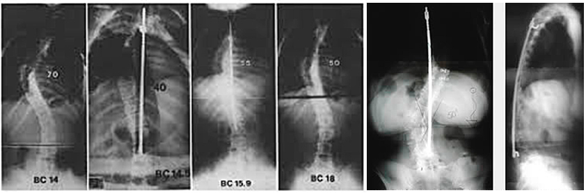

При взгляде сзади позвоночник обычно выглядит прямым. Позвоночник, пораженный сколиозом, искривляется и часто выглядит как S или C образная дуга. Это особенно заметно, если человек худощавый.
Сколиоз - это искривление позвоночника, которое составляет 10 градусов или более при рентгенографии. Сколиоз может поражать грудной и поясничный отделы позвоночника.
Причины развития сколиоза
В более чем 80 процентах случаев причина сколиоза неизвестна. Такая деформация называется идиопатическим сколиозом. В других случаях сколиоз может развиваться в результате дегенерации (износа) межпозвонковых дисков, при ревматоидном артрите, остеопорозе или как наследственное заболевание.
Часто задаваемые вопросы о сколиозе
При сколиозе выявляется ряд генетических, биохимических, скелетных и нейромышечных аномалий. Однако, как и в случае «что было в начале: курица или яйцо», не понятно являются все эти обнаруженные изменения причиной или следствием.
Ученым удалось в ходе генетических экспериментов вызвать сколиотическую деформацию у рыб. Что, в том числе, опровергает теорию о неравномерной нагрузке (ношение сумки на одном плече) или неправильной осанке.
Замечено, что сколиоз часто передается по наследству. Если у родителя сколиоз был с детского возраста, то и у ребенка (особенно девочки) развитие сколиоза крайне вероятно.
Изменения позвоночника при сколиозе
Сколиоз является многоплоскостной деформацией, а не только искривлением прямой линии спины. Суть в том, что в норме наш позвоночник имеет изгибы боковой проекции (сагиттальный профиль): шейный и поясничный лордоз, грудной кифоз.
При сколиозе эти изгибы уменьшаются (изменение в сагиттальной плоскости), появляется сколиотическая деформация (изменение фронтальной плоскости) с одной или несколькими дугами.
Эти изменения напоминают на то, как вручную выжимают белье. Позвоночник скручивается вокруг своей оси.
Из-за такого скручивания позвонки в зоне деформации (изменение в аксиальной плоскости) сворачиваются своей центральной частью внутрь, а задними элементами наружу (торсия).
слева: позвонок с торсией при сколиозе, справа: нормальный позвонок
Эта ротация изменяет строение позвонков. Они вырастают в порочном положении, как искривленное дерево. Если гипотетически взять и распрямить позвоночник, не фиксируя его ничем, то он вновь скрутиться из-за измененной анатомии.
позвоночник со сколиозом при взгляде сверху
скрученный позвоночный столб
Из-за торсии позвонков происходит скручивание грудной клетки, так как ребра прикрепляются непосредственно к позвонкам. Так появляется реберный горб. Чем больше скручена грудная клетка, тем острее реберный горб и тем он заметнее.
деформация ребер при сколиозе
реберный горб виден сильнее при наклоне
Откуда берется боль при сколиозе?
Что бы понять откуда берется болевой синдром, попробуйте посидеть пару часов, наклонившись вбок. Или пару лет. Или пару десятков лет… Сначала начинают болеть мышцы из-за асимметричной нагрузки. При мышечных болях как раз эффективны физкультура, массажи, мануальная терапия и прочее.
Каждую пару позвонков соединяют 3 сустава: межпозвонковый диск спереди и парные межпозвонковые (фасеточные/дугоотросчатые) суставы сзади. Если мышцы позвоночника слабые или плохо развиты, то всю опорную нагрузку берут на себя вышеперечисленные элементы. «Кость - это дерево, обращенное корнями в мышцы». Плохое развитие мускулатуры приводит к недостатку питания костей и суставов, раннему развитию дегенеративно-дистрофических изменений в позвоночнике.
При сколиозе изгибы позвоночника проходят во фронтальной плоскости, получается, что на один из межпозвонковых суставов приходится нагрузка намного больше, а на другой совсем маленькая. Естественно, что при таком положении вещей суставы начинают «жаловаться», посылая сигналы о боли и дискомфорте.
При больших деформациях могут ущемляться спинномозговые нервы. Это происходит за счет уменьшения межпозвонковых отверстий на вогнутой стороне деформации, через которые эти нервы выходят. Возникают боли в конечностях. При сильном сколиозе внутренние органы (легкие, сердце) работают в нерациональном режиме из-за недостатка места. Появляется постоянная одышка, что может являться показанием к операции.
Показания к операции
Показания для операции при сколиозе:
- Риск прогрессирования деформации позвоночника
- Дисбаланс туловища
- Большая деформация (более 50 градусов)
- Прогрессирование в динамике на снимках
- Болевой синдром, который не удается контролировать с помощью нехирургических методик лечения
- Незрелый скелет (подробности ниже) с величиной деформации более 50 градусов
- Косметический дефект. Крайне спорное показание для операции. Сколиоз хорошо заметен у девушек, которые склонны к худобе. Прибавка в весе, и как следствие увеличение количества мягких тканей на спине, неплохо сглаживают дефекты. По моему мнению, хирургия позвоночника – это не эстетическая хирургия. Однако, при некоторых ситуациях хирургическая коррекция сколиоза может давать хороший косметический эффект.
Однако, все вышеперечисленные показания являются достаточно относительными. Сколиоз крайне редко может приводить к развитию паралича или другой серьезной опасности для здоровья. В конечном счете мы говорим по большей части о качестве жизни. Устраивает или не устраивает наличие сколиоза и возможные связанные с ним боли. Прогрессирование деформации не происходит за несколько дней. Важно понимать, что решение об операции делит жизнь человека на «до» и «после». Это решение не зависит только от врача, но в большей части от пациента.
Когда оперировать сколиоз?
Идиопатический сколиоз впервые бывает замечен в детском возрасте. Усиливается в периоды активного роста. В школьные годы он может как прогрессировать, так и становится меньше под воздействием лечебной физкультуры и специальных корсетов. Связано это с незрелостью скелета. Скелет у детей мягкий и довольно пластичный. Однако, после взросления эта пластичность уходит. Кости становятся твердыми. Деформация замирает. Вдобавок присутствует измененная анатомия позвонков (торсия). Все это не даст исправить деформацию при помощи консервативного лечения (мануальная терапия, остеопатия и т.д.). Определенного успеха во взрослом возрасте можно добиться только при наличии какой-либо фоновой патологии опорно-двигательного аппарата (гиперэластичность суставов и т.п.).
Наиболее популярным методом определения степени взросления скелета является оценка окостенения тазовых костей по методике, которую описал Joseph Risser. Считается, что 3 степень - самое оптимальное время для операции в подростковом возрасте при наличии показаний. Человек уже не будет активно расти, но позвоночник и спинной мозг достаточно пластичные и смогут без всяких последствий перенести коррекцию даже больших деформаций. Примерный возраст 13-15 лет.
После созревания скелета (во взрослом возрасте) определенных временных рамок нет. «Слишком поздно» бывает только в случае, когда проведение длительной и тяжелой операции опасно для здоровья, что обычно бывает в пожилом возрасте.
Подготовка к операции по коррекции сколиоза
Перед операцией обязательно выполняется специальный рентген. Делаются снимки с захватом всего позвоночника в двух проекциях спереди и сбоку.
Также необходимы снимки с наклонами вбок для оценки подвижности (мобильности) деформации. Если на этих снимках позвоночник плохо распрямляется при наклоне в сторону дуги, то деформация считается ригидной.
Оценка мобильности деформации является краеугольным камнем оценки сколиоза. Мобильность предусматривает то, насколько коротко можно зафиксировать сколиоз. А в хирургии сколиоза борются за каждый сегмент, который можно сохранить без фиксации.
варианты фиксации позвоночника при сколиозе (позвоночник в зоне фиксации неподвижен)
Операция по коррекции сколиоза
Многие хирурги предпочитают проводить операцию из единственного заднего доступа. Разрез по центру спины проводят на протяжении всего пораженного позвоночника.
задний доступ к позвоночнику
В процессе операции необходимо «развязать» позвоночник, сделать его подвижным. Для этого проводят остеотомию: рассекают и удаляют части позвонков и соединения между позвонками. Чем ригидней деформация, тем агрессивнее остеотомия.

В тяжелых случаях деформацию словно Гордиев узел разрубают и заменяют патологическую часть на искусственный имплант. Риски при таких операциях гораздо выше.
Подвижному позвоночнику можно придать необходимую форму, т.е. устранить сколиоз и восстановить физиологические изгибы.
После этого устанавливают импланты (спондилосинтез). Спондилосинтез позволяет зафиксировать исправленный позвоночник в необходимом положении.
Здесь я немного углублюсь в историю
Попытки лечить сколиоз хирургическим путем предпринимались с начала XX века. Прогресс останавливало большое число осложнений из-за отсутствия нормальный имплантов для стабильной фиксации позвоночника. В те времена лечили как могли: скручивали позвонки проволокой (серкляж), привязывали куски ребер и других костей. Пациенты были обречены на длительный постельный режим. Использовались «гипсовые кроватки».
Ситуация улучшилась после того, как Paul Harrington разработал имплант, для лечения сколиоза. Дистрактор Харрингтона представлял собой распорку, с помощью которой было возможно поддержать позвоночник как яблоню с плодами. Это было хорошим решением в те времена, но не идеальным. Дистрактор не восстанавливал физиологические изгибы и не обеспечивал достаточной стабильности для сращения позвонков. Отсутствие физиологических изгибов приводило к синдрому «прямой спины» и болевому синдрому, а при недоразвитие костного блока к вывихиванию металлоконструкции.

К 80-м годам благодаря усилиям Eduardo Luque, Yves Cotrel и Jean Dubousset появился «сегментарный инструментарий». Сегментарный, потому что конструкцией фиксировался каждый позвонок. Благодаря этому стал возможен «деротационный маневр», суть которого применяется и поныне. Позвоночник при коррекции сколиоза не просто выпрямляется (это опасно растяжением и травмой спинного мозга), а «деротируется» из фронтально плоскости в сагиттальную для воссоздания физиологических изгибов и нормальной анатомии. Такое элегантное решение позволило резко снизить количество неврологических осложнений после операций.

Сегодня в подавляющем большинстве случаев для фиксации позвоночника используют транспедикулярные винты (pedicle - ножка). Деформацию исправляют во всех трех плоскостях, для этого используется модернизированная техника деротационного маневра - прямая деротация позвонков, которую придумал корейский хирург Se-Il Suk. Эта методика позволяет устранять последствия торсии позвонков.
Для деротации позвоночника и коррекции сколиоза применяют специальные устройства, которыми при желании можно завернуть позвоночный столб в обратный крендель.
Крепятся такие рычаги к винтам. Они развивают очень большие усилия.

Коррекция сколиоза проходит под контролем нейромонитора, спинной мозг прозванивается, как электрическая цепь. Специальные электроды, закрепленных на голове, пускают импульсы, которые воспринимают электроды, закрепленные на ногах. Дополнительно пациента “будят” во время операции (Stagnara wake up test) если возникают сомнения.
После проведения коррекции позвоночник надежно фиксируют металлоконструкцией в необходимом положении. В зоне фиксации выполняют костную пластику для того, чтобы позвонки срослись в одну кость. Любой металл имеет свои усталостные характеристики и всегда есть риск перелома стержней, какими бы крепкими они не были. Биологический костный блок не имеет таких недостатков.
После операции остается рубец по средней линии. Некоторые пациенты маскируют свой рубец татуировками.
После операции
В послеоперационном периоде позвоночник будет неподвижен во всей зоне фиксации. Первое время ходьба и самые простые движения будут ощущаться по-новому. Придется адаптироваться к новому положению тела и изменившемуся росту. Будет происходить «калибровка» органов чувств (попробуйте наклонить голову и походить так некоторое время, ощущение будет необычным).
Адаптация у взрослых занимает 2-3 месяца. В этот период конструкция приживается, в зоне операции формируется рубец. Никаких упражнений как правило не требуется, только ходьба.
После контрольного рентгена и осмотра, когда все убедились, что в зоне операции все спокойно, режим можно расширить. Лучшим вариантом является посещение бассейна и плавание. Из упражнений можно пробовать различные «планки». Не следует допускать форсированных сгибаний и скручиваний.
Через 1 год после операции должен сформироваться костный блок. Это будет видно на компьютерной томографии. Обычно к этому времени организм полностью адаптируется к «новому» позвоночнику. Можно вести обычный образ жизни. Важно лишь помнить, что существуют ограничения, связанные с неподвижным позвоночником, поэтому не рекомендуются:
- Экстремальные виды спорта
- Ударные нагрузки (например, конный спорт и т.п.)
- Форсированное сгибание или скручивание в позвоночнике (в том числе при занятии сексом)
Другие общие рекомендации о поведении после операции на спине можно посмотреть здесь.